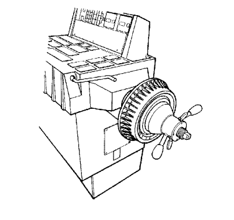

Inspección de equilibrio del rotor/tambor del freno
- Apoye el eje motriz del vehículo sobre un elevador adecuado. Consultar Elevación del vehículo con un gato .
- Retire los conjuntos de neumático y llanta del eje motriz. Consultar Desmontaje y montaje de la rueda y el neumático .
Advertencia : Consulte Desmontaje y montaje de la rueda y el neumático en la sección Prólogo
- Vuelva a instalar los pernos de la rueda para retener los rotores de freno.
- Haga funcionar el vehículo a la velocidad a la que se produce la anomalía mientras inspecciona la presencia de la vibración.
Atención: No apriete el pedal del freno con los rotores o los tambores del freno quitados o con las pinzas de freno recolocadas lejos de los rotores del freno o se podrá deteriorar el sistema de frenos.
- Si la vibración continúa presente, extraiga los rotores del eje motriz y vuelva a poner en marcha el vehículo a la velocidad problemática.
- Si la vibración se elimina al extraer los rotores del freno del eje motriz, repita la prueba con un rotor montado cada vez. Sustituya el rotor que origina o contribuye a causar la anomalía de vibración.

- Si sustituyó un rotor del freno a consecuencia de los pasos anteriores, o si fuera necesario confirmar los resultados obtenidos durante dichos pasos, y/o para revisar los componentes del eje no motriz, realice estas tareas:
| 7.1. | Monte el rotor/tambor del freno sobre un equilibrador de igual forma que un conjunto de neumático y llanta. |
| | Nota: Compruebe sólo el desequilibrio estático de los rotores/tambores del freno; ignore las lecturas de desequilibrio dinámico. |
| 7.2. | Inspeccione el rotor/tambor en busca de un desequilibrio estático. |
No existe una tolerancia establecida para el desequilibrio estático del rotor/tambor del freno. No obstante, cualquier rotor/tambor del freno medido de esta misma forma y que supere los 21 g (¾ onz.) puede tener el potencial de causar o contribuir a ocasionar una vibración. Es necesario sustituir los rotores/tambores sospechosos de causar o contribuir a ocasionar una vibración. Cualquier rotor/tambor sustituido debe revisarse de la misma forma en busca de un desequilibrio.
| © Copyright Chevrolet Europe. All rights reserved |